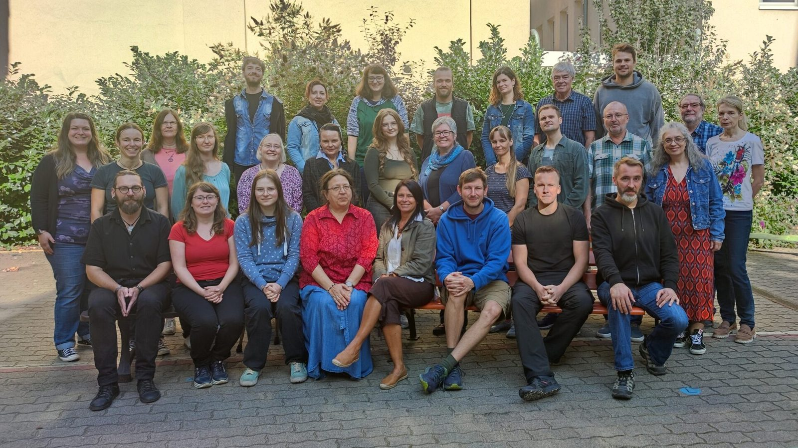

Ihr wollt wissen, was ihr Kind hier erwartet? Fragt uns.
Normalerweise beantworten Schulen solche Fragen. Wir machen es anders: Hier erzählen wir – die Schüler – offen, was gut läuft, was hilft und warum wir uns an unserer Schule wohlfühlen. Danach entscheidet ihr selbst.
Wichtig: Diese Seite ist von Schülern geschrieben. Für bindende Infos (Anmeldung, Schulgeld, Aufnahme) gilt immer die offizielle Website der Schule.
Die 6 wichtigsten Fragen – unsere ehrlichen Antworten
„Kommt mein Kind da unten unter?"
Klassen bei uns haben maximal 24 Schüler, Kleingruppen sogar höchstens 12. Das merkt man: Lehrer kennen dich, bemerken schlechte Tage, nehmen sich Zeit. Niemand geht hier verloren.
„Was, wenn mein Kind Schwierigkeiten hat?"
Es gibt Förderunterricht in Deutsch, Mathe und Englisch – auch bei LRS, Dyskalkulie oder AD(H)S. Und es gibt Sozialarbeiter, die wirklich erreichbar sind. Kein Stigma, alle nutzen das mal.
„Lernt mein Kind da genug für die Zukunft?"
MINT hat bei uns Priorität: Fachkabinette, digitale Tafeln, Schul-Notebooks, Robotik-AG. Und für den Berufseinstieg gibt es Praktika, Werkstatttage und eine Potenzialanalyse.
„Und neben dem Lernen?"
Musik, Kunst, Theater, Sport, Band, Schul-Events. Wer kreativ ist, findet hier seine Bühne – im wortwörtlichen Sinne. Das macht die Schule zu dem, was sie für uns ist.
„Wie steht's um Sprachen?"
Zweite Fremdsprache zur Wahl: Französisch, Spanisch oder Italienisch. Beim Italien-Austausch fährt man wirklich hin – die besten zwei Wochen des Schuljahres, meint jedenfalls die 9a.
„Was kostet das alles?"
Das Schulgeld beträgt 198 € im Monat – und enthält sogar die Nutzung eines Schul-Notebooks für drei Jahre inklusive Wartung und Lernsoftware. Die exakten Konditionen stehen auf der offiziellen Seite.
Wo euer Kind später sitzen, bauen und proben wird



Eltern-FAQ – kurz und ehrlich
Was braucht mein Kind für die Aufnahme?
Eine Bildungsempfehlung der Klasse 4. Details zum Aufnahmeverfahren stehen auf der offiziellen Anmeldeseite.
Wie läuft's mit den Unterrichtszeiten?
Montags starten wir erst um 10:00 Uhr, Dienstag bis Donnerstag von 8:00 bis 15:30, freitags bis 14:45. Der Ganztag ist fester Bestandteil.
Gibt es einen Tag der offenen Tür?
Ja! Samstag, 14. November 2026, 10–14 Uhr. Wir Schüler führen persönlich durchs Haus – ihr könnt alles fragen.
Sind die Zitate und Blog-Beiträge echt?
Das Schülerblog wird von uns geführt. Einige Start-Beiträge sind noch Beispiele zur Erklärung – ab jetzt entstehen die Beiträge von uns Schülern. Zitate von echten Schülern ergänzen wir fortlaufend.
Wohin mit verbindlichen Fragen (Anmeldung, Gebühren)?
An die Schule direkt: 0351 88 94 23 10 oder semper-oberschule@semper-schulen.de. Die offiziellen Seiten findet ihr unter semper-schulen.de.
Wir würden uns freuen, wenn ihr vorbeikommt.
Tag der offenen Tür: Samstag, 14. November 2026, 10–14 Uhr · Jordanstraße 7, Dresden. Wir zeigen euch die Schule so, wie sie wirklich ist.